Documentación FLX
Introducción

Un pequeño motor 2D declarativo
Define estructuras mediante JSON, comportamientos mediante JavaScript y deja que el runtime haga el resto.
La filosofía FLX: datos, funciones y runtime
FLX está construido alrededor de una idea muy sencilla:
Objetos -> Datos
Scripts -> Funciones
Runtime -> Conecta ambos
Los objetos definen qué existe.
Los scripts definen qué ocurre.
El runtime conecta ambos durante la ejecución.
{
"$schema": "https://flxforge.github.io/FLXEngine/schemas/object.schema.json",
"size": {
"width": 18,
"height": 24
},
"visual": {
"color": "white",
"representation": [
{
"primitive": "triangle",
"mode": "outline"
}
]
},
"mechanics": {
"type": "polar",
"motion": {
"speed": { "limit": 180 },
"acceleration": 120,
"inertia": 0.99
},
"rotation": {
"speed": { "start": 180 }
}
}
}
Los datos definen la existencia.
/// <reference path="https://flxforge.github.io/FLXEngine/scripts/flx.d.ts" />
const MOVE = direction(0);
function action(ship) {
const thrust = input_direction(ship, MOVE, VERTICAL);
if (thrust > 0) {
accelerate(ship, thrust);
}
}
function motion(ship) {
advance(ship);
}
Las funciones definen el comportamiento.
FLX no intenta trasladar el motor al script.
El runtime mantiene las reglas del mundo; los scripts expresan el comportamiento de los objetos.